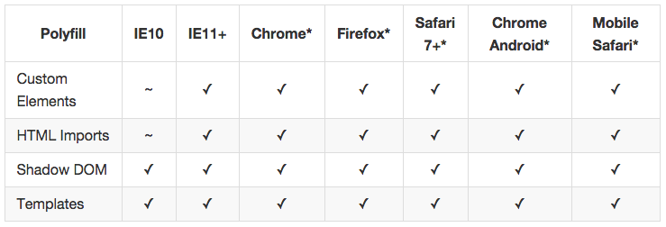

Web Components
@michaldolny
Czym są Web Components
Zestaw standardów pozwalających tworzyć własne elementy HTML jako wyizolowane komponenty, które posiadają wewnętrzne style i zachowanie.
Składowe Web Components
- Custom Elements - własne tagi HTML, rozszerzanie innych obiektów DOM
- Shadow DOM - enkapsulacja elementów
- Templates - reużywalne bloki kodu
- Imports - importowanie komponentów z zewnętrznych plików HTML
Custom Elements
Custom Elements
Lifecycle callbacks
// Fires when an instance of the element is created
element.createdCallback = function() {};
// Fires when an instance was inserted into the document
element.attachedCallback = function() {};
// Fires when an instance was removed from the document
element.detachedCallback = function() {};
// Fires when an attribute was added, removed, or updated
element.attributeChangedCallback = function(attr, oldVal, newVal) {};
Custom Elements
unresolved elements
Elementy zadeklarowane lub utworzone, które nie zostały jeszcze zarejestrowane w przeglądarce.
my-element {
opacity: 1;
}
my-element:unresolved {
opacity: 0;
}
Shadow DOM
var element = document.querySelector('my-element');
// Create a shadow root
var shadowRoot = element.createShadowRoot();
// Fill it with some markup
shadowRoot.innerHTML = 'Inside the shadow DOM';
Shadow DOM
stylowanie z zewnątrz
my-element::shadow span {
/* selects span tags in shadow roots of my-element's */
color: red;
}
body /deep/ span {
/* selects all span tags - in shadow roots or not */
color: red;
}
Templates

// Access template's content
var t = document.querySelector('#my_template').content;
// Manipulate internal element
t.querySelector('img').src = 'logo.png';
// Clone and append in the DOM
document.body.appendChild(t.cloneNode(true));
Templates
stylowanie

Templates
rozszerzanie istniejących elementów
// Create an object based in the HTML Element prototype
var element = Object.create(HTMLElement.prototype);
// Fires when an instance of the element is created
element.createdCallback = function() {
this.textContent = 'hello world!'; // do something
};
// Register my-element in the browser
document.registerElement('my-element', {
prototype: element,
extends: 'h1'
});
Import
// Reference the import document itself
var doc = this.document.currentScript.ownerDocument;
// local web server with npm (http://localhost:8080/index.html)
sudo npm install http-server -g
http-server
// local web server with php (http://localhost:9009/index.html)
php -S localhost:9009
Browser support
http://jonrimmer.github.io/are-we-componentized-yet/Polyfills
http://webcomponents.org/polyfills/ Libraries
https://www.polymer-project.org/
IE10+ (webcomponents.js)
IE9+ (custom elements, imports)
Check more
Practice:
https://github.com/zdolny/webcomponents-playground- http://webcomponents.org/
- http://customelements.io/
- https://github.com/webcomponents/element-boilerplate
- https://vimeo.com/97308701
- http://cbateman.com/blog/a-no-nonsense-guide-to-web-components-part-1-the-specs/
- http://www.html5rocks.com/en/tutorials/webcomponents/customelements/
- http://toddmotto.com/web-components-concepts-shadow-dom-imports-templates-custom-elements/
- http://blog.teamtreehouse.com/create-custom-html-elements-2
https://github.com/mateusortiz/webcomponents-the-right-way